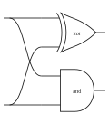
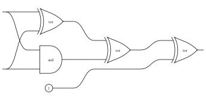
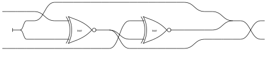
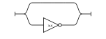
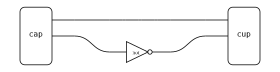
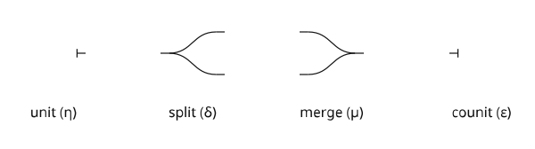
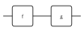
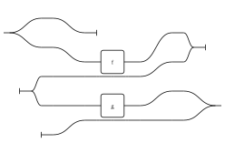
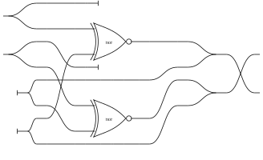
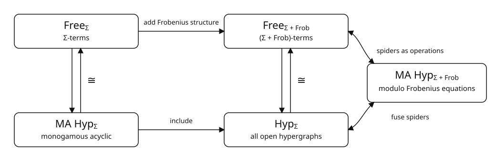

Layered Cyclic Diagram Layout
tl;dr: we lift a layered drawing algorithm from acyclic hypergraphs to cyclic ones. The result is typed-pictures, a library and CLI for laying out open hypergraphs. You can install it with
cargo install typed-pictures-cliUsing the CLI, you can generate an SVG from a hexpr--our textual syntax for open hypergraphs. For example, this expression describes a one-bit half-adder whose outputs are the sum and carry bits:
typed-pictures circuit/circuit.hex \
--padding 0.25 \
--no-wire-labels \
--generators circuit/circuit-generators.json \
'([x y . x y x y] {xor and})'This produces the image below:

Everything needed to reproduce it is included with this post:
the circuit definitions, the
generator manifest, and custom SVGs for
gates such as XOR and AND.
I generated the gate drawings with Codex; typed-pictures handles their layout
and wiring. The generation script rebuilds every
diagram in the post.
{kind=link}
{kind=link}
Drawing Open Hypergraphs
Open hypergraphs
provide a datastructure for "circuit-like syntax".
If you can think of your syntax as "boxes with ports connected by wires", open
hypergraphs are for you!
Electronic circuits are a natural example.
Here is a NOR gate, generated from its open hypergraph
representation:

In the underlying hypergraph, wires are nodes and boxes are hyperedges. This reverses the usual graph-drawing convention of treating boxes as nodes, but lets each box retain an ordered list of input and output ports.
Now, to generate these diagrams, we need some software. Previously, I used dot, but it isn't designed for hypergraphs and requires a lot of hackery. I wanted something that:
- Natively supports boxes with multiple ordered inputs and outputs
- Can be called as a library, rather than as an external tool
- Supports custom box drawings (like the gates in our diagram above)
The third point is especially useful: you can draw the individual boxes
however you like--even ask Codex to generate them--then let typed-pictures
handle the layout and wiring.
So how does it work?
The NOR diagram can be drawn using
layered graph drawing:
reachability induces a partial order on the operations, and incomparable
operations can be grouped into the same layer.
Here, the first layer is {xor, and, 1}, followed by {xor, id}, and finally
{xor}.
This direct layering step does not apply when the input hypergraph contains a cycle, as in this latch circuit:

So how do we deal with cycles? It turns out that we can replace any cyclic open hypergraph with an equivalent acyclic one using the Frobenius decomposition.
Intuition
Here's a sketch before going into detail. Say we have a NOT gate with its output connected to its input:

This is represented as a hypergraph with:
- One edge (labeled
not) - One node (the single wire)
Reachability no longer defines a partial order: the NOT gate can reach itself. Instead, we first replace each node (wire) with a pair of edges (boxes):
- A left spider, representing all its occurrences as an input
- A right spider, representing all its occurrences as an output
Here's what that looks like for our "cyclic NOT" diagram:

Now there are no directed cycles:
A node (a wire) can only reach another node via an edge (a box),
but we've replaced all the cyclic paths with ones that "terminate" at a cup.
This may seem arbitrary, but it has a nice theoretical interpretation: we're computing a Frobenius decomposition. Fusing the explicit spiders recovers the original hypergraph, and such a decomposition always exists.
Let's see how this works!
Open Hypergraphs
Let's first talk datastructures. An open hypergraph is a hypergraph with a designated global interface (that's the "open" part). The hypergraph has nodes and edges, where each edge connects an ordered list of source nodes to an ordered list of target nodes. Intuitively, edges are operations (boxes), while nodes are wires.
Recall the cyclic NOT diagram from before:
The corresponding open hypergraph contains the following data, shown here as Python-like pseudocode:
nodes = [
(), # Node 0: the circuit's single wire
]
edges = [
{
"label": "not",
"sources": [0], # The NOT gate reads from node 0...
"targets": [0], # ...and writes back to it, forming the cycle
},
]
# The circuit has no dangling input or output wires.
global_sources = []
global_targets = []Nodes can appear any number of times in operation sources and targets, and in the global source and target. Mathematically, this kind of open hypergraph corresponds to a morphism of the free symmetric monoidal category presented by \(\Sigma + \mathbf{Frob}\).
For more precision, see the Addendum below. For now, the important part is \(+ \mathbf{Frob}\): it is as if we had added four special operations to our hypergraph:

I say "as if", because these operations (and some associated equations) are not represented as explicit edges, but instead are implicit in the connectivity of the hypergraph.
That's the key trick: instead of keeping the Frobenius operations implicit, we make them explicit operations.
Making every wire's Frobenius structure explicit in this way gives us a monogamous acyclic open hypergraph. This restriction was introduced in Rewriting modulo symmetric monoidal structure, and open hypergraphs of this kind represent morphisms in theories without implicit Frobenius operations. For example, a combinational circuit is acyclic, but it is monogamous only when operations such as fan-out and discard are made explicit.
Monogamous acyclic open hypergraphs represent diagrams that are:
- Acyclic: there are no directed cycles.
- Monogamous: every node appears...
- exactly once as a source (or global target), and
- exactly once as a target (or global source).
The monogamy condition more intuitively says that we can think of the wires in our diagrams as always connecting exactly two "ports".
The NOR diagram is acyclic but not monogamous: each input wire fans out to
both xor and and. The cyclic NOT diagram is neither.
Mathematically, a monogamous acyclic open hypergraph corresponds to a morphism of the free symmetric monoidal category presented by \(\Sigma\)--notice the lack of \(\mathbf{Frob}\) here.
Now, the cool part is this: given an unrestricted hypergraph, a full Frobenius decomposition gives us an equivalent monogamous acyclic one.
Frobenius Decompositions
We've already seen the intuition for how this works above; now we'll be a little more precise. For a very precise treatment, see Data-Parallel Algorithms for String Diagrams.
First, we extend our set of operations with an explicit Spider operation.
This is really a family of operations--one for each pair of input and output
arities--where each spider stands for a connected diagram built from the four
Frobenius generators above.
Then, for each node (wire) \(x\) in the original hypergraph, we introduce two spiders:
- A left spider \(s_x^-\), whose inputs correspond to occurrences of \(x\) on the global source boundary, and whose outputs correspond to occurrences of \(x\) as an operation input.
- A right spider \(s_x^+\), whose inputs correspond to occurrences of \(x\) as an operation output, and whose outputs correspond to occurrences of \(x\) on the global target boundary.
There is one extra port on each spider, used to connect \(s_x^-\) directly to \(s_x^+\). More precisely, if \(x\) occurs \(p\) times on the global source boundary, \(m\) times as an operation input, \(n\) times as an operation output, and \(q\) times on the global target boundary, then:
\[ s_x^- : p \longrightarrow 1 + m \qquad\text{and}\qquad s_x^+ : 1 + n \longrightarrow q. \]
Every other occurrence is moved onto its own fresh wire, carrying the same label as \(x\). This makes the result monogamous: each fresh wire connects exactly one spider port to one operation port or global boundary. It also makes the result acyclic. All original operations lie between the left and right spiders, so every directed path moves from left spiders, through at most one original operation, to right spiders.
Finally, the construction is reversible modulo the Frobenius equations. Fusing each explicit spider and identifying its incident wires recovers the original node \(x\), and doing this for every node recovers the original open hypergraph.
Now let's look at a small acyclic example: the composition of f followed by
g.

Here's its Frobenius decomposition, computed as described above:

Unfortunately, this is incredibly ugly. Notice that by decomposing in this way, we always get a three-layer diagram: source spiders, operations, and target spiders. Even this small acyclic example becomes difficult to read.
What can we do about this?
Cycle Breaking
To fix this, we replace wires with explicit left and right spiders only where necessary. Which wires need to be replaced? Precisely those which cause cycles!
Finding this set is the process of cycle breaking, closely related to the cycle-removal stage of layered graph drawing algorithms such as dot. Finding a minimum set of wires that intersects every directed cycle is NP-hard, so we use a fast greedy heuristic. The one used in typed-pictures works as follows:
- Turn the hypergraph into a directed bipartite graph with one vertex for each
wire and one for each operation. An operation input becomes an arc
wire → operation, and an operation output becomes an arcoperation → wire. - Repeatedly remove every source and sink--that is, every vertex with no incoming or no outgoing arcs. Such a vertex cannot be part of a directed cycle, so removing it does not require us to spiderize anything. We call this step peeling the acyclic fringe.
- If vertices remain after peeling, the residual graph contains a cycle.
Choose the remaining wire with the largest
indegree × outdegreescore, record it as a cycle breaker, and remove it. This score favours wires whose removal is likely to break several cycles at once. - Peel again, and repeat until no vertices remain.
The selected wires are not necessarily the smallest possible set, but they are guaranteed to intersect every directed cycle: anything not selected was eventually removed as part of an acyclic fringe. Spiderizing exactly these wires therefore makes the diagram acyclic while leaving the rest of its wiring unchanged.
For comparison, here is the latch after a full Frobenius decomposition, with every wire replaced by explicit spiders:

For this latch, cycle breaking needs only one wire. Spiderizing that wire yields an acyclic diagram, shown here:
Both diagrams represent the same open hypergraph modulo the Frobenius equations, but cycle-broken diagrams are typically easier to read.
Summing up
To sum up: Frobenius decompositions let us lift an algorithm for rendering acyclic open hypergraphs into one that works on any open hypergraph.
In practice, we only add spiders where we need them to break cycles. That means simple diagrams stay simple, while cyclic ones still get an equivalent acyclic representation using the usual Frobenius structure.
Addendum: \(\Sigma\)-terms, Open Hypergraphs, and Monogamous Acyclicity
For the categorically minded, here is the categorical picture. Let \(\Sigma = (\Sigma_0, \Sigma_1)\) be a monoidal signature consisting of generating objects and typed operations. Write \(\mathrm{Free}_\Sigma\) for its category of terms, built using composition and tensor product and taken modulo the symmetric monoidal laws. If the signature also carries equations \(\Sigma_2\), quotient every category below by the congruence they generate.
Let \(\mathrm{Hyp}_\Sigma\) be the category of \(\Sigma\)-labelled open hypergraphs, and let \(\mathrm{MAHyp}_\Sigma\) be its monogamous acyclic subcategory. The standard correspondences, together with the optional factorisation on the right, fit into this commuting diagram:

In symbols, \(\mathrm{Free}_\Sigma \cong \mathrm{MAHyp}_\Sigma\), and \(\mathrm{Free}_{\Sigma+\mathbf{Frob}} \cong \mathrm{Hyp}_\Sigma\). On the right, the Frobenius equations identify each connected region of Frobenius wiring with a single hypergraph node.
The right-hand equivalence may be factored through \(\mathrm{MAHyp}_{\Sigma+\mathbf{Frob}}/{\equiv_{\mathbf{Frob}}}\): monogamous acyclic hypergraphs with explicit Frobenius generators, taken modulo the Frobenius equations.
The specific full decomposition in this post is guaranteed to be monogamous and acyclic; an arbitrary way of making spiders explicit need not have this property. Expanding its spiders gives a \((\Sigma+\mathbf{Frob})\)-term, while fusing them recovers the original open hypergraph. Such a representative is not unique, but all valid choices agree modulo the Frobenius equations.
The cycle-breaking optimisation is deliberately weaker: it makes only the spiders needed to remove directed cycles explicit. The result is guaranteed to be acyclic, but it need not be monogamous because unselected wires may still branch or merge implicitly.